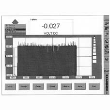
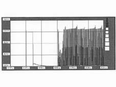
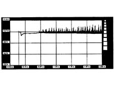
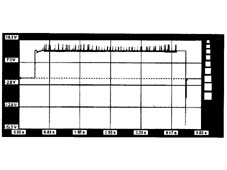
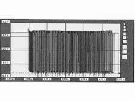

7010AB SIDE DOOR ACTIVATING MODULE OPERATING CHECK
- Path
- Test > 70 FITTINGS > 7010 PASSENGER COMPARTMENT REAR SIDE DOORS > 7010A REAR SIDE DOOR ASSEMBLY > 7010AB SIDE DOOR ACTIVATING MODULE OPERATING CHECK
- Kind
- test / check procedure
- Applies to
- all engines; all production periods
- Interactive page
- https://sloeber94.github.io/elrnDB-fUlss/en/#/179006807
Applies to: all engines; all production periods
Fault diagnosis of the PLS node output connectors and the sliding side door movement power modules.
After having connected at least the Examiner negative supply terminal to the vehicle earth and switched it on, enter the voltmeter ambient and connect the voltmeter lead (black probe) to the vehicle chassis.
Motor activation
Connect the red voltmeter probe to one of the two motor supply leads for the door in question (pin 1, the connector is located on the sliding side door node) and check that the correct supply is present.
Select a 20 volt, 5 second end of scale on the Examiner, press the start button and activate the door opening straight afterwards. All the figures that appear should be evaluated with a tolerance of about 20%; the image should be similar to the one below with the door open.

For a better display, highlight an area and use the zoom and the image should be similar to the following one.

Connect the red voltmeter probe to the other wire (pin 2, for the motor supply connector) for the door in question. With the values selected previously, press the start button and activate the door straight afterwards; the image should be similar to the one below with the door open.

Brake Clutch
To measure the voltage values, at the Brake/Clutch, position the red voltmeter probe at pin 4 of the six-way connector (pin 3 is earthed), press the start button and, straight after, activate the door opening or closing. The immage that appears should be similar to the following image.

The values described above imply that the Side Door Node is working properly
Position sensor
The supply for pin 1 of the same connector is +5Volt, whilst pin 6 for the position sensor of the door in question is earthed. Place the red voltmeter probe firstly at pin 2 and then at pin 5 of the six-way connector. With the values selected previously, press the start button and, straight after, activate the door opening or closing. All the figures that appear should be evaluated with a tolerance of about 20%; the image should be similar to the one below with the door open.

This graph, displayed at the side door control output, indicates that the position sensor is working.
If these signals are not present, check whether the wiring at the node terminals is short circuited before any replacement operation.